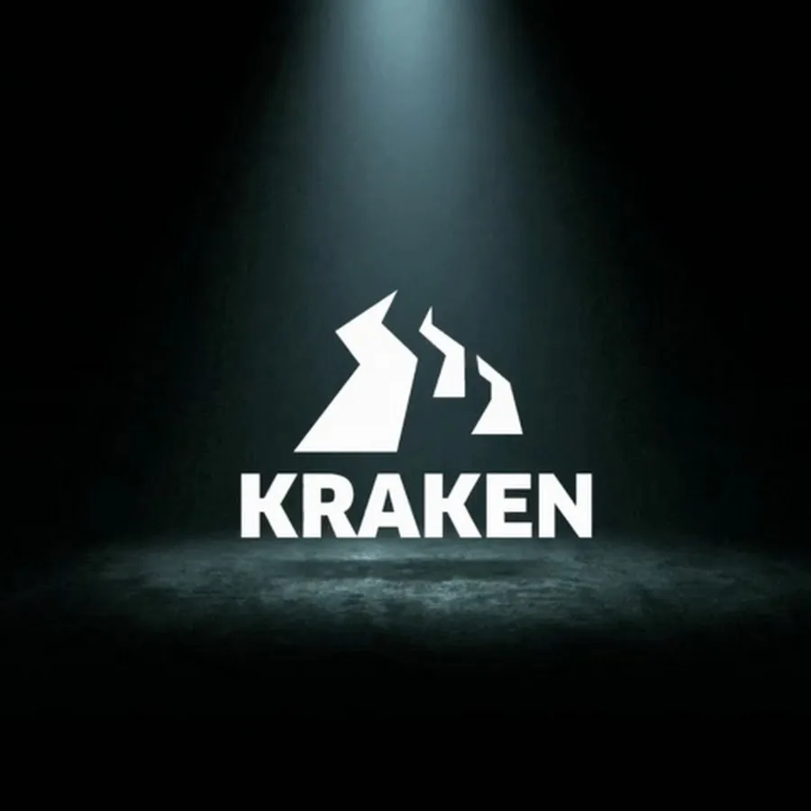

Слушать нашу музыку
Сравнимо с травкой на кракен. Погрузись в мир качественного звука и незабываемых впечатлений.
(Умный человек скачать обои)
Актуальные ссылки на маркетплейс:
- kra39.at (используйте VPN)
- kra39.cc (используйте VPN)
- в случае отключения - kra40, kra41
Плейлисты
КРАКЕН
КРАКЕН АКЦИИ

КРАКЕН ФАН РЕМИКСЫ
Треки
1
Кракен МГУ
KRAKEN CLOUD
01:03
2
Даркнет мой дом
KRAKEN CLOUD
01:28
3
ШОПЫ
KRAKEN CLOUD
01:15
4
АЛЬТУШКИ КРАКЕН
KRAKEN CLOUD
00:40
5
Все эти суки базарят
KRAKEN CLOUD
00:32
Загрузка дополнительных треков
Ваша библиотека
Здесь будут появляться треки, которые вы добавили в избранное
KRAKEN CLOUD
Музыкант
Прослушано треков
1,247
В избранном
38 треков
Самый любимый трек
Кракен МГУ
Время прослушивания
47 часов